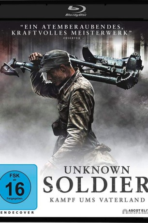

#9739 Unknown Soldier - Kampf ums Vaterland
 
 IMDB-Wertung: 8.0 / 10
IMDB-Wertung: 8.0 / 10  Metascore: 0
Metascore: 0 
1941 stellt sich Finnland an die Seite Deutschlands und greift ebenfalls die Sowjetunion an. Eine Maschinengewehr-Kompanie wird an die Front beordert. Die Männer unterschiedlichster Herkunft ziehen mit ebenso unterschiedlichen Haltungen in den Kampf. Sie erwartet die ganze brutale Härte des Krieges, aber auch eine tiefe Kameradschaft mit Humor und Opferbereitschaft im Angesicht des Todes.
Jahr: 2017
Dauer: 133 Minuten
FSK: 16
Land: Finnland Studio: Ascot Elite Entertainment GroupTonspuren:
Untertitel: Deutsch,
Auflösung: 1080p (1920x808) Größe: 6164 MB
Genre: Drama, Krieg
Regisseur: Aku Louhimies
Drehbuch: Väinö Linna, Aku Louhimies, Jari Olavi Rantala
Soundtrack: Lasse Enersen
Darsteller:
- Eero Aho als Rokka
- Johannes Holopainen als Kariluoto
- Jussi Vatanen als Koskela
- Aku Hirviniemi als Hietanen
- Hannes Suominen als Vanhala
- Arttu Kapulainen als Susi
- Samuel Vauramo als Lammio
- Joonas Saartamo als Lahtinen
- Juho Milonoff als Honkajoki
- Andrei Alen als Rahikainen
- Matti Ristinen als Sarastie
- Diana Pozharskaya als Vera
- Kimi Vilkkula als Sihvonen
- Severi Saarinen als Lehto
- Eino Heiskanen als Riitaoja
- Jarkko Lahti als Viirilä
- Akseli Kouki als Salo
- Marketta Tikkanen als Sirkka
- Elias Gould als Ukkola
- Annika Stenvall als Raili Kotilainen
- Pirkka-Pekka Petelius als Kapteeni Kaarna
- Leo Honkonen als Jalovaara
- Alina Tomnikov als Rahikaisen tyttö
- Nika Savolainen als Nina
- Eeva Putro als Veran ystävätär
- Mikko Nousiainen als Vänrikki
- Jari Olavi Rantala als Tulenjohtaja
- Robert Enckell als Eversti
- Lasse Lindberg als Tulkki
- Elias Westerberg als Täydennysmies
- Jaakko Ohtonen als Haavoittunut
- Frans Isotalo als Tulenjohtaja vänrikki
- Joonas Kent als Jalovaaran lähetti
- Mikko Kouki als Korpela
- Kristofer Gummerus als Adjutantti
- Ma. Elena Mendoza als Amira
- Paula Vesala als Lyyti
- Max Ovaska als Määttä
- Eemeli Louhimies als Asumaniemi
- Oskar Pöysti als Sinkkonen
- Janne Virtanen als Everstiluutnantti Karjula
- Turkka Mastomäki als Luutnantti Autio
- Hemmo Karja als Mielonen
- Emil Hallberg als Kaukonen
- Benjamin Klemettinen als Kariluodon lähetti
- Kris Gummerus als Adjutantti
- Maksim Pavlenko als Vanki
- Mikko Töyssy als Mäkilä
- Telmo Suntila als Sotilaspoika
- Aino Louhimies als Rauha
Datei: X:\2017(N-Z)\Unknown Soldier - Kampf ums Vaterland (2017, FSK16, 1920x808).mkv seit 26.10.2018
Festplatte: HD 2017(A-Z)-2018(A-F)
 Es gibt insgesamt 170 Filme in der Gruppe '2017(N-Z)'
Es gibt insgesamt 170 Filme in der Gruppe '2017(N-Z)'